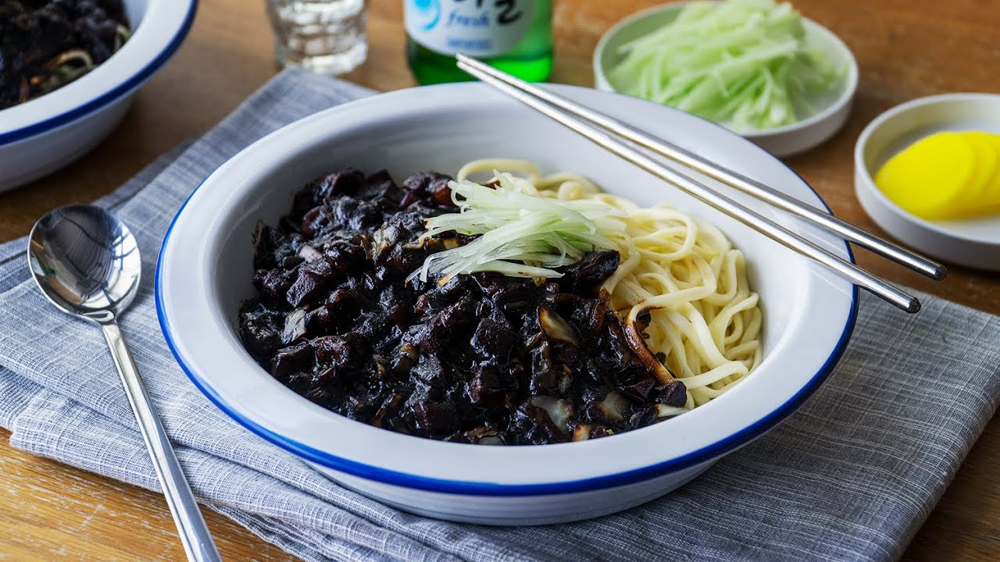

Jajangmyeon

Description
This decadent bowl of Jajangmyeon will send you to Korea and back with every mouthful! With a few easy-to-get vegetables and a trip to the local Korean grocery store, this recipe is guaranteed to have you wanting more
Ingredients
- 600g Pork Belly (cut into cubes)
- 500g Korean Jjajang noodles
- 3 Cloves Garlic (minced)
- 220g Onions (cut into cubes)
- 300g Korean black bean sauce
- 1 tbsp Cornstarch
Steps
- Stir fry the pork belly in the pan with 1 tbsp of fragrant oil until slightly brown. Drain and set aside.
- In the same pan with pork fats, add in 1 tbsp of fragrant oil, add in garlic and oinions, and continue to stir fry until onions are slightly translucent.
- Add in 2 tbsp of fragrant oil into the same pan. Add in Korean black bean sauce and continue to sauté over low heat until fragrant.
- Transfer the pork & vegetable mixture back into the pan and continue to mix well. Pour in mirin and continue to mix until well combined.
- Add water into the pan, mix well and bring to boil. Cover and braise for 15 minutes
- Blanch the noodles until cooked. Rinse noodles over tap water to give the noodles a more chewy texture. Set them into a serving bowl.
- Check on the sauce, pour in the cornstarch mixture slowly to make it slightly thicker. Mix well.
- Drizzle some fragrant oil over the noodles. Pour meat sauce on top of the noodles.